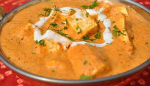

Paneer Makhni

Description
Paneer Makhani is an easy paneer recipe from the Punjab region of India. It is a tomato-based gravy dish that is served as a side dish with flatbreads and rice recipes like pulaos and biryanis.
It has a slightly sweet taste and tastes well with a tinge of butter and luscious milk cream drizzled on top.
Ingredients
- Cottage cheese or paneer
- 2 tsp butter
- 2 tbsp vegetable oil
- 4 tomatoes chopped, or use a 400g can chopped tomatoes
- 2 tbsp vegetable oil
- 1 tsp tomato purée
- garlic cloves, roughly chopped
- 4-5 cardamom pods, roughly bashed
- 1 small cinnamon stick
- 1 bay leaf
- 4 cashew nuts, finely chopped and soaked in water until soft
- 1cm piece of ginger, peeled and finely grated
- 1 tsp red chilli powder, such as kashmiri mirch
- 1 chilli, sliced in half lengthways (optional)
- 250g paneer, cut into medium cubes
- 1 tbsp fenugreek leaves
- 1 tsp garam masala
- 80ml single cream, to serve (optional)
Steps
- First rinse and chop the tomatoes (250 grams or 4-5 medium ripe red tomatoes)
- In a blender or grinder make a smooth puree of the chopped tomatoes. No need to add any water while blending the tomatoes.
TIP: To make this easy dish even faster, simply use store bought tomato purée. But try to buy tomato puree without preservatives or make your own tomato puree.
- In a mortar-pestle, crush the ginger & garlic to a paste (1 teaspoon ginger garlic paste, or ½ inch ginger + 3-4 small garlic cloves).
- 4. Melt 2 tablespoons butter in a pan. Add 1 tej patta (Indian bay leaf) and then the crushed ginger-garlic. Sauté for some seconds or till the raw aroma of the crushed ginger-garlic goes away.
- Add the prepared tomato purée.
- Stir well and add ½ tsp red chili powder (or cayenne pepper or paprika). Keep on sautéing till the fat leaves the sides of the tomato paste.
- Meanwhile chop 200 grams cottage cheese into bitesized cubes, squares or triangles.
- After 15 minutes on a low flame, the tomatoes and spices have sautéed well and the fat leaving the sides of the mixture is clearly seen. The masala will look glossy, will leave the sides of the pan and will come together.
- Now add 1.5 cups water.
- Stir very well and let the gravy/sauce come to a gentle simmer.
- Simmer the gravy till it reduces and thickens a bit.
- Add ½ to 1 inch ginger julienne and 1 to 2 slivered green chilies. Simmer for a minute.
- Stir and then add salt as required, ½ teaspoon crushed kasuri methi (dry fenugreek leaves) and ½ to 1 teaspoon sugar. Also add the paneer cubes. Mix gently and switch off the heat.
No need to cook the paneer cubes as sometimes they become hard or chewy even after cooking for 1 to 2 minutes.
- Add 2 to 3 tablespoons cream. NOTE: I used Indian brand of amul cream, but any will do with 25 to 35% fat.
You can reduce the proportion of cream if you want.
- Stir gently but thoroughly, so that the cream is mixed uniformly with the gravy without breaking the paneer cubes. Even if it does break, do not worry, it will taste great. Switch off the flame.
- Lastly sprinkle ¼ teaspoon garam masala and again stir gently. Check the seasonings and add more salt or sugar if required.
- Serve paneer makhani hot with roti, paratha or naan, or with steamed rice or jeera rice if you are avoiding gluten. Enjoy!